Hackathon at University of California, Irvine - June 22nd - 23rd, 2023Hackathon hosted by National Academies of Sciences, Engineering, and Medicine
(National Academies), in collaboration with the Centers for Disease Control and Prevention (CDC)
and the National Association of County and City Health Officials (NACCHO).
What does STIgma AI do exactly?Marketing materials will be generated for dissemination through
organic social media posts and digital ads on social media and dating sites. It incorporates guidelines from CDC STD and from data sources including YRBSS,
state and local public health databases, CMS, etc. for baseline knowledge that it will learn to
build upon.
RoleVisuals, high fidelity design, prototyping, lead development of UX & UI.
TeamConsisted of 2 healthcare providers (clinician & registered nurse),
1-backend software engineer who specialized in AI, & myself.
ToolsFigma
STI CASES AT AN ALL-TIME HIGH
ProblemsA multitude of problems cause huge barriers for reducing STI cases, like the negative
stigmas surrounding seeking STI care, and the overly time-consuming process of healthcare
providers collecting data from sources like focus groups & sending it to local and national
levels. In addition, the majority of STI cases are reported among the youth age group. Below is our flow map
of factors to rising STIs.
Painpoints: Firsthand Accounts
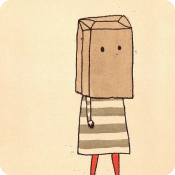
From a Hackathon Mentor - Who’s an HIV Survivor & Active SpeakerThe lack of passion and discrimination for people who contract
STI’s are more often than not is incredibly undignifying and discouraging, which
both denies the care & knowledge they need.
From Medical Care Providers at HackathonCollecting raw, quality data through methods like focus groups,
drains resources that the healthcare force doesn’t have. Also, a huge
lag time exists in the time it takes to process these datas from local to national levels.
Health Organization Data FactsThe 15 - 24 year-old age group only makes up 13% percent of the
population, yet accounts for 50%+ of reported STI cases in gonorrhea,
syphillis, and chlamydia.
DESIGN CHALLENGE
What is an innovative way to tackle these problems: collecting quality data without
draining healthcare resources, the lack of a judgement-free education environment for people seeking medical help,
and helping the majority demographic affected by STI’s?Peek into the Solution ->
An AI that serves 2 purposes:
to provide valuable data to healthcare providers, and
encourage seekers of medical care to get resources and judgment-free education.
We designed an app that has an AI with one feature for healthcare researchers & a chat feature for medical care seekers.
The AI uses stable diffusion in development to specialize its responses with STI education based individual
user’s needs, instead of a generic answer(the current leading chat AI, called Roo, does this).
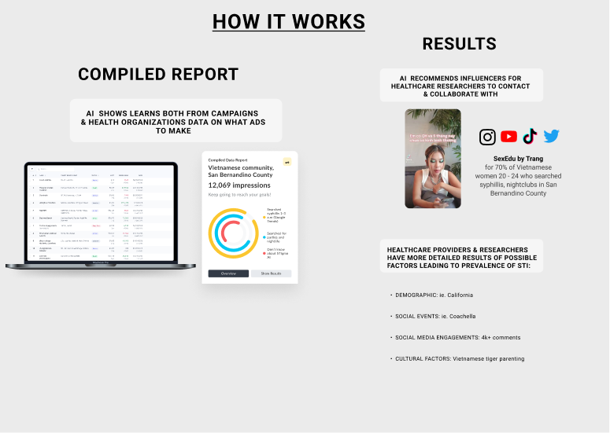
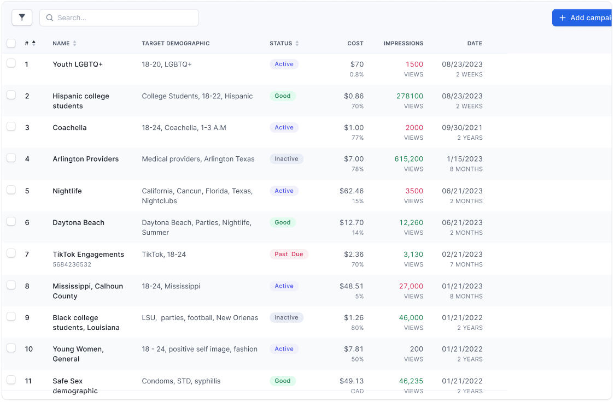
LOW FIDELITY, EZ-NAV 2-PAGE PROTOTYPE
Color Palette
Choosing the AIOne that best connects the target audience(youth):
not too cartoon-ish
not too creepy
someone to trust for important information
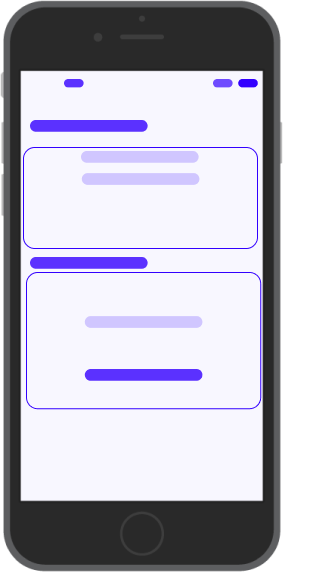
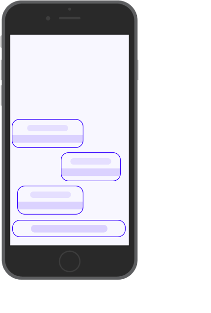
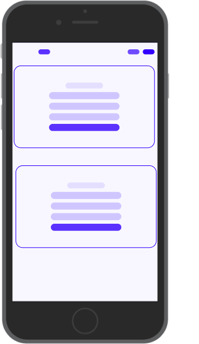
Landing Page:
Navigation Bar with Links to the Campaign page, Chat Support Page
Simplified, minimal, straight-to-the point info into what it does.
Chat Support
Informative, leading with follow-ups, human-like interactions.
Campaign
A simple fill-out form: 1 section for a topic, and a 2nd for context.
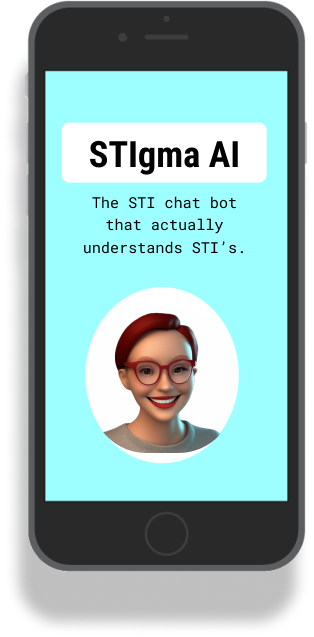
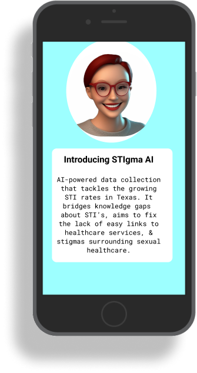
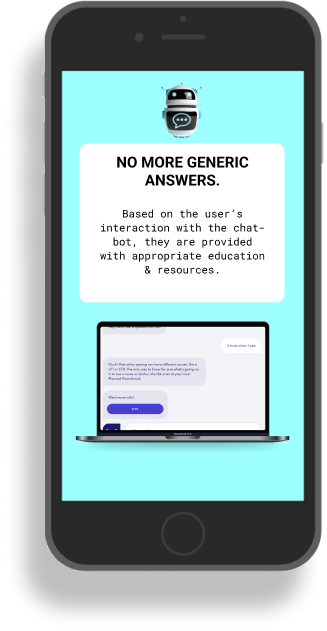
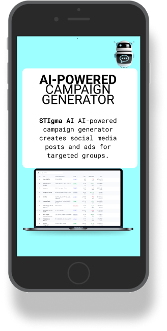
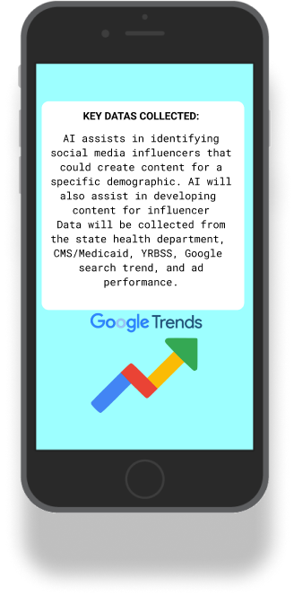
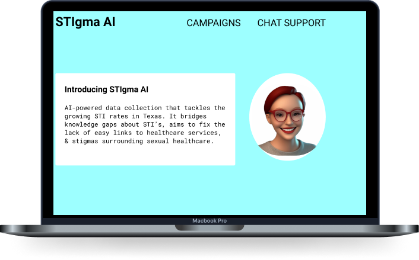
REFLECTION & RESULT
$5,000 Grant for 2nd Place!
Collaboration
I learned how to facilitate a collaborative and time-efficient approach.
It was a very rewarding experience to learn how to leverage everyone's expertise
and come up with a grand solution together.
Presenting Extensive Research on a Time Crunch
Our group presented our pitches within just 6 mins. It was insightful to
learn how to present the important aspects, the right insights, within such as
short time frame.
Thank you for visiting!
This website was made from scratch by me!
You can contact me via: LinkedinFacebook